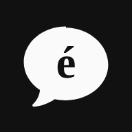
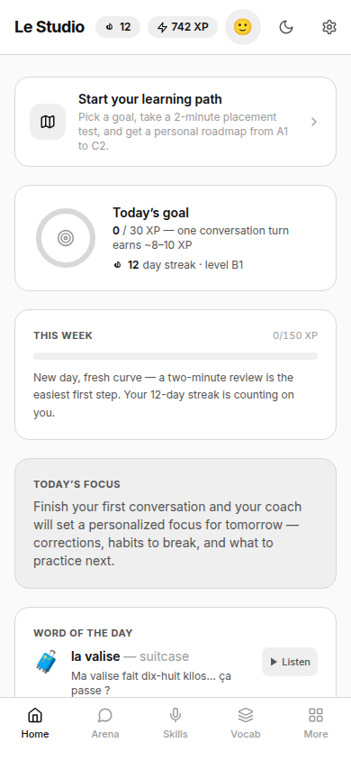
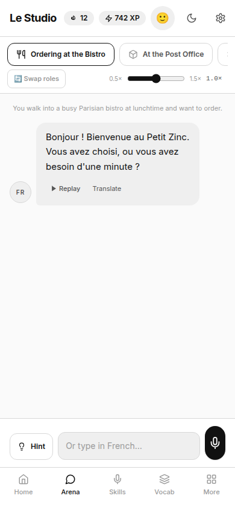
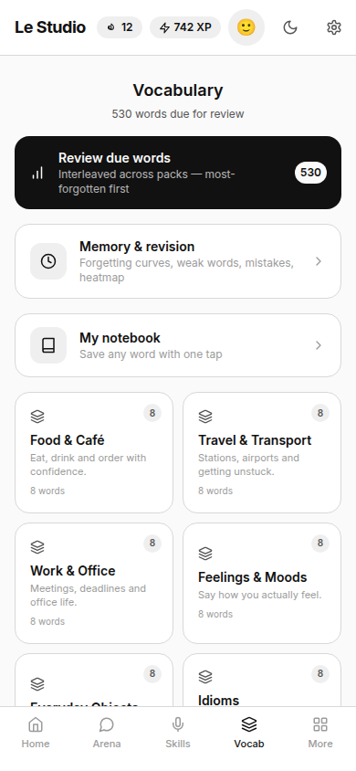

Le Studio French
Voice roleplay with an AI partner, a 60-lesson path, 520+ SRS flashcards, grammar, listening and culture. Free, private, installable PWA.
Start speaking
Le StudioLe Studio is a small product family: speak French every day, protect your calendar, plan meals without fake health theatre. Local-first cores. Optional cloud only when you opt in.
Explore the family Jump to French ↓Voice roleplay with an AI partner, a 60-lesson path, 520+ SRS flashcards, grammar, listening and culture. Free, private, installable PWA.
Start speakingA monochrome calendar with week/day views, recurrence, free-slot heuristics and ICS import/export. Everything stays in your browser.
Open Chrono repoPlan, shop, cook and log food honestly. Meal plans export to calendar (.ics) for Chrono or any other app. Local-first; household sync optional.
Open Forq in repoEach app gets its own calm intro site — same monochrome system, one HTML file, no build step. Open any below.
2,216 spec statements, FSRS, instant mark-scheme marking and a single highest-value recommender. WJEC, AQA, Edexcel and OCR at GCSE and A-level.
Visit Revise siteOffline-first training — 39 exercises, programs that become dated sessions, load-tracked sets and history-derived attributes.
Visit Arise siteNot a mood tracker — a thinking tool. 8-stage pipeline with hedged bias language, evidence for and against each reading.
Visit Reflect sitePlan, shop, cook and log honestly. Starts empty; meal plans export to .ics for any calendar.
Visit Forq siteDaily proposition, five rounds vs AI or another player, judged on an argument graph that explains the win.
Visit Debate siteTiny CLI that cuts noisy tool output by 99% with per-tool parsers, secret redaction and gain tracking.
Visit RTK siteOne calm studio — no owls, no guilt.



Order at a bistro, survive a job interview, argue with an airline — 40 voice scenarios with per-turn corrections and scored feedback.
Pick a goal, take an adaptive placement test, and follow 12 units to a near-native finale. Checkpoints move your CEFR level as you improve.
SM-2 spaced repetition, most-forgotten-first review, and a knowledge score that grows week by week.
Pronunciation coaching, dictée, hands-free audio, numbers rapid-fire, podcasts and authentic readings.
25 interactive CEFR-tagged lessons — drills and quizzes deep-linked from your conversation mistakes.
Etiquette, food, festivals, history and regional French — because sounding right is more than grammar.
French and Chrono run 100% in your browser by default. Forq is local-first with optional household sync and an AI relay only when you choose them. No ads. No sale of personal data.
Install French or Chrono: browser menu → Install app, or on iOS Share → Add to Home Screen.
Open Le Studio FrenchNo for French and Chrono. Forq works without an account; signing in only enables optional household sync and server AI.
In French, AI conversation and scoring use your own free Groq API key stored only in localStorage. Without a key, Mock Mode explores the full app offline.
Yes via open formats: Forq exports a meal plan as .ics; Chrono imports ICS. Neither reads the other’s private storage without an export you trigger.
Fake retailer prices, DNA-based diet claims, employer wellness spying, or forced login walls on offline cores. Forq’s in-app capability register says this plainly.